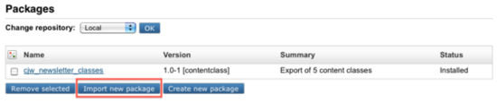
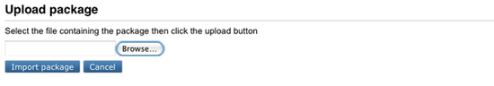

Installation
The following steps describes how to install the CJW Newsletter extension:
- When all the requirements are met, download the CJW Newsletter extension from the eZ projects website.
Extract the downloaded files to this location:
...<root of your eZ Publish installation>/extensionActivate your CJW Newsletter extension at this location:
settings/override/site.ini.append.phpor
extension/site_example/settings/override/site.ini.append.phpBy adding the CJW Newsletter extension:
[ExtensionSettings] ... ActiveAccessExtensions[]=cjw_newsletter ...
Note: From eZ Publish 4.4 the CJW Newsletter will be part of the new Extension Load Ordering functionality. In 4.4 you will need to enter the metadata for each extension you wish to install in
extension/my_extension/extension.xmlThen the extension load ordering will take care of the correct sequential loading of the extensions.
Next update your autoload settings for this extension. From the command line you could use the following command:
php bin/php/ezpgenerateautoloads.php -e -vIt is also possible to update the autoloads from the Administration Interface. Under the Setup tab, click on the Extensions link in the menu on the left. In the list displayed check the added extension (cjw newsletter) and press the Regenerate autoload arrays for extensions button.
Add tables to the database used by your eZ Publish instance. If you are using MySQL, you can import the tables from the eZ Publish's root directory with the following command:
mysql -u <user> -p <database_name> < extension/cjw_newsletter/sql/mysql/schema.sqlDon't forget to replace the placeholders <USER> and <DATABASE_NAME> with the actual user name of your database and the name of the database used by eZ Publish.
If you are using another DBMS, the procedure is very similar. Please refer to the documentation of your DBMS if you are experiencing issues.Assign the newsletter admin design in your admin siteaccess only if your eZ Publish version is < ez4.2.0 in order to adjust the eZ Publish Administration Interface with the left CJW Newsletter menu. Note that this setting does not apply if you have newer versions than eZ Publish 4.3. To assign the newsletter design to version 4.2.0 or older go to:
settings/siteaccess/<example_admin_en>/site.ini.append.phpor
extension/<site_example>/settings/<example_admin_en>/site.ini.append.phpand make the following changes:
[DesignSettings] SiteDesign=<cjw-example_admin_en> AdditionalSiteDesignList[]=newsletter_admin_ez4.0.0 AdditionalSiteDesignList[]=admin
Check if you have an override menu.ini.append.php in your siteaccess. If so, you should add the new CJW Newsletter tab manually at one of the following locations:
settings/siteaccess/<example_admin_en>/menu.ini.append.phpor
extension/<site_example>/settings/<example_admin_en>/menu.ini.append.phpAdd the tab as follows:
[TopAdminMenu] Tabs[]=newsletterNow you should clear the cache. The following command can be used:
php bin/php/ezcache.php --clear-id=template-overrideOr if you prefer, this can be done from the administrator interface. Under the Setup tab, click on the Cache Management link in the menu on the right. And select the caches to clear.
- Next you should import the CJW Newsletter content classes and demo structure. The package "newsletter_root-1.0.1.ezpkg.ezpkg" can be imported to the system, this means you must upload, unpack and place it under an appropriate internal repository within the installation. The following example demonstrates how to import such a site style package:
- Go to the Setup tab in your administrator interface and then click on the Packages link in the menu on the left side. Choose the local repository and click the Import new package button located under the list of packages (it is marked in red in the next screenshot):
 Choose the desired file, in this case "cjw_newsletter/packages/newsletter_root-1.0.1.ezpkg.ezpkg", on your local computer (as shown in the following screenshot) and click the Import package button.
The system will import the package from "cjw_newsletter/packages/newsletter_root-1.0.1.ezpkg.ezpkg" and show it in the list of packages.
- You must now create a CJW Newsletter root folder (for example: Newsletter Root) which is used for all CJW Newsletter content. Follow the procedure below to create a new root folder as a starting point for your newsletter structures:
Please note that you need to create your Newsletter structure in the following sequence - Create a root folder - create a section - assign the section to the root.- Create a folder called "Newsletter Root" under the "Content structure" tab
- Create a section called "CJW Newsletter" in "Setup" - "Sections"
- Assign the new section to the "Newsletter Root" folder.
- You have now created a folder called "Newsletter Root". This will appear when you click the "Newsletter" tab. From the "Newsletter Root" you create the new Newsletter structure with Newsletter systems, newsletter lists, newsletter editions and newsletter articles.
You can now create the CJW Newsletter structure manually like described in the bullet-points below:
Note: Make sure that you follow this sequence and that every new object is created within the previous structure.1. At the CJW Newsletter Root (if you need a new newsletter system later start at the root folder again)
2. create your newsletter system (you can create new newsletter systems as the need may be)
3. then create a newsletter list within that system (this will list all newsletters create in this particular newsletter system)
4. create a newsletter edition within the newsletter list (all editions created in this structure will be listed here)
5. In the newsletter edition you can either:
* create all your articles within the same edition, or
* create separate articles in a new structure below the newsletter edition.- Next you check roles for user access. To do this go to the User accounts tab in the Administrator Interface and click on the Roles and Policies link in left hand menu (Access control). Set policies according to your own preferences and necessities.
Next create a cjw_newsletter.ini.append.php file for the CJW Newsletter settings at the following location:
/settings/override/cjw_newsletter.ini.append.phpor preferred
/extension/<site_example>/settings/override/cjw_newsletter.ini.append.phpThe content could for example look like this:
[NewsletterSettings] PhpCli=php AvailableSkinArray[]=default [NewsletterMailSettings] # smtp, sendmail, file TransportMethodCronjob=sendmail # test newsletter TransportMethodPreview=sendmail # subscribe, infomail TransportMethodDirectly=sendmail # Configuration for SMTP SmtpTransportServer= SmtpTransportPort=25 SmtpTransportUser= SmtpTransportPassword= EmailSender=newsletter@example.com EmailSenderName=Example.com Newsletter EmailSubjectPrefix=[Newsletter Example.com]
Keep in mind to adjust these settings according to your needs.
Update the default cjw Newsletter skin or create a new one. By default the CJW Newsletter default skins are located here:
/extension/cjw_newsletter/design/newsletter_design/templates/newsletter/skin/default/outputformatThe files are "text.tpl" and "html.tpl". Lets say you have designed a custom skin called "my_custom_skin". The related text.tpl and html.tpl files should be located here:
/extension/cjw_newsletter/design/newsletter_design/templates/newsletter/skin/my_custom_skin/outputformatThe new skin should then be definded in cjw_newsletter.ini.append.php (created in step 13) like this:
[NewsletterSettings] AvailableSkinArray[]=my_custom_skin
And don't forget to clear the cache after adding new templates!
Check the SiteURL settings in site.ini of the siteaccess which is used for rendering the newsletter. This setting is used to create absolute links to images:
site.ini.append.php[SiteSettings] # URL of site, often used to link to site in emails etc. SiteURL=example.com
Next activate the ts files in "cjw_newsletter.ini.append.php" This setting you should copy to your siteaccess "site.ini" so you have full control of which ts files are loaded
[RegionalSettings] TranslationExtensions[]=cjw_newsletter
To create all mails for a CJW Newsletter edition which are ready to be sent out run, the following command can be used:
php runcronjobs.php -s siteaccess cjw_newsletter_mailqueue_createTo send out all mails which are in the mail queue created by step 15, the following command can be used:
php runcronjobs.php -s siteaccess cjw_newsletter_mailqueue_process- Your CJW Newsletter should now be properly installed and ready for use!
Geir Arne Waaler (18/11/2010 8:07 am)
Geir Arne Waaler (22/11/2010 12:27 pm)
Comments
There are no comments.